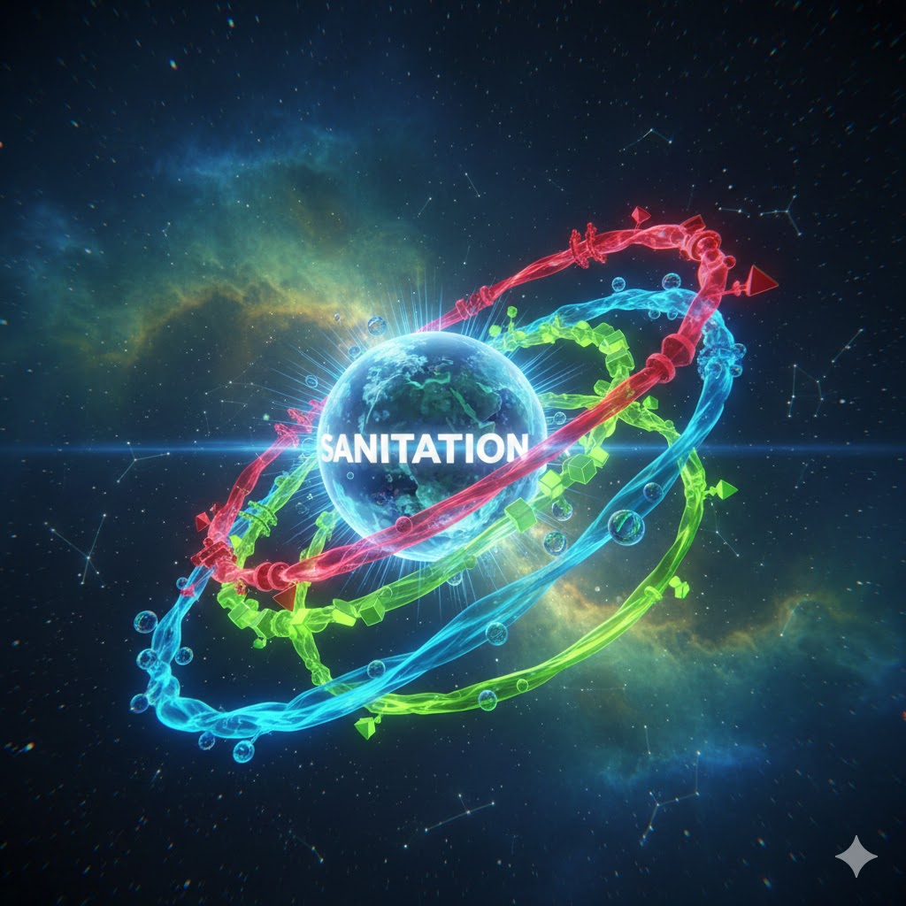
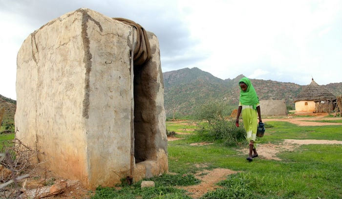

A preventable crisis: Only about 31% of Kenyans have access to safely managed sanitation services.
Explore Data
Access to services that ensure hygienic separation of excreta from human contact.
Rural populations contaminating land and water sources due to lack of facilities.
1/3 of Kenya Schools lack basic Sanitation (WHO/UNICEF JMP 2024/2025 Updates)
The crisis manifests differently depending on geography. The fight against disease is ultimately a fight against fecal waste.
In rural villages, the crisis is one of absence. Over 4 million people practice open defecation, directly contaminating the land and water sources they rely on, fueling a preventable cycle of disease.

Sessional Paper No. 7 of 2024 is the blueprint for achieving safely managed sanitation for all by 2030.
Shifts focus from basic access to managing the entire service chain—from safe containment to integration.
Addresses sanitation financing challenges, promoting Public-Private Partnerships (PPPs) and governance.
Commits to leveraging climate-resilient technologies and promoting gender and disability-friendly facilities.
Join our revolutionary visual campaign. Let your single, powerful photo be the spark that ignites a global movement. Give a voice to the voiceless.